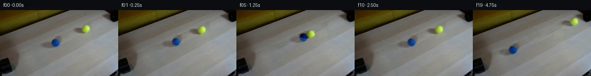

![首帧]()

Round 00
2026-11-04T22:06:21.815941+00:00像素候选变化代码 +231/−0inspection 更新
pixels c07bcc432e46ab43 · code e5413cbab03ea8c0
查看本轮 generate.py 真实 diff
--- previous/generate.py
+++ current/generate.py
@@ -0,0 +1,231 @@
+"""Local source-pixel animation, reconstructed wood, equal-mass collision.
+
+Inputs: first_frame.png and prompt.txt only. No learned models or rendering
+engines. The static background is repaired with matched source-image texture
+and a sparse Poisson solve; the balls and shadows use translated source pixels.
+"""
+from pathlib import Path
+import json
+import numpy as np
+import cv2
+from PIL import Image, ImageDraw
+from scipy.ndimage import binary_dilation, map_coordinates, gaussian_filter
+from scipy.sparse import lil_matrix
+from scipy.sparse.linalg import spsolve
+from scipy.special import erfc
+from artifact_io import save
+
+ROOT = Path(__file__).resolve().parent
+TEMP = ROOT / '.tmp'
+TEMP.mkdir(exist_ok=True)
+SOURCE = np.asarray(Image.open(ROOT / 'first_frame.png').convert('RGB'))
+H, W = SOURCE.shape[:2]
+Y, X = np.mgrid[:H, :W]
+CENTERS = np.array([[120.15, 71.40], [185.70, 40.90]], dtype=float)
+RADII = np.array([8.5, 8.8])
+AXIS = CENTERS[1] - CENTERS[0]
+DISTANCE = np.linalg.norm(AXIS)
+AXIS /= DISTANCE
+SPEED = 22.0
+CONTACT_DISTANCE = 17.4
+HIT_TIME = (DISTANCE - CONTACT_DISTANCE) / (2 * SPEED)
+RESTITUTION = 0.9
+DRAG = 0.8
+
+
+def removal_masks():
+ masks = []
+ for center, shadow in [((120, 71), (104, 77)), ((186, 41), (170, 45))]:
+ mask = np.zeros((H, W), np.uint8)
+ cv2.ellipse(mask, center, (12, 12), 0, 0, 360, 1, -1)
+ cv2.ellipse(mask, shadow, (23, 9), -12, 0, 360, 1, -1)
+ masks.append(mask.astype(bool))
+ # The source blue ball also has a broad dark halo to its upper right.
+ halo = np.zeros((H, W), np.uint8)
+ cv2.ellipse(halo, (128, 63), (11, 12), -20, 0, 360, 1, -1)
+ masks[0] |= halo.astype(bool)
+ return masks
+
+
+def reconstruct_background(masks):
+ """Find local tabletop donors and integrate their gradients inside masks."""
+ src = SOURCE.astype(float)
+ all_mask = np.logical_or.reduce(masks)
+ valid = ((Y > 55 - .39 * X) & (X > 4) & (X < W - 4) &
+ (Y > 4) & (Y < H - 4) & ~all_mask)
+ background = src.copy()
+ donors = []
+ for mask in masks:
+ outer = binary_dilation(mask, iterations=4)
+ ring = outer & ~mask
+ iy, ix = np.nonzero(outer)
+ ry, rx = np.nonzero(ring)
+ target = src[ry, rx]
+ a = np.c_[np.ones(len(ry)), (rx - rx.mean()) / 30, (ry - ry.mean()) / 30]
+ pinv = np.linalg.pinv(a)
+ best = None
+ for dy in range(-40, 41):
+ for dx in range(-90, 91):
+ if abs(dx) + abs(dy) < 20:
+ continue
+ sy, sx = iy + dy, ix + dx
+ if sy.min() < 0 or sy.max() >= H or sx.min() < 0 or sx.max() >= W:
+ continue
+ if not valid[sy, sx].all():
+ continue
+ donor_ring = src[ry + dy, rx + dx]
+ coef = pinv @ (target - donor_ring)
+ correction = a @ coef
+ residual = target - donor_ring - correction
+ cost = np.mean(residual ** 2) + .07 * np.mean(correction ** 2)
+ if best is None or cost < best[0]:
+ best = (cost, dx, dy, coef)
+ if best is None:
+ raise RuntimeError('No valid source-tabletop donor')
+ cost, dx, dy, coef = best
+ donors.append({'offset': [dx, dy], 'boundary_cost': float(cost)})
+ donor = np.zeros_like(src)
… diff truncated; 144 more lines …